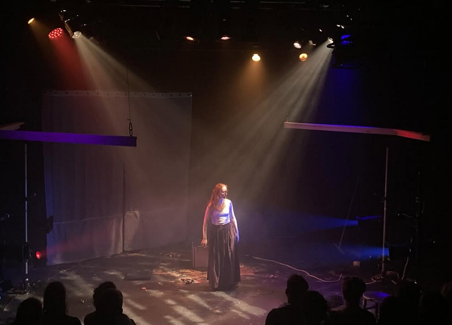
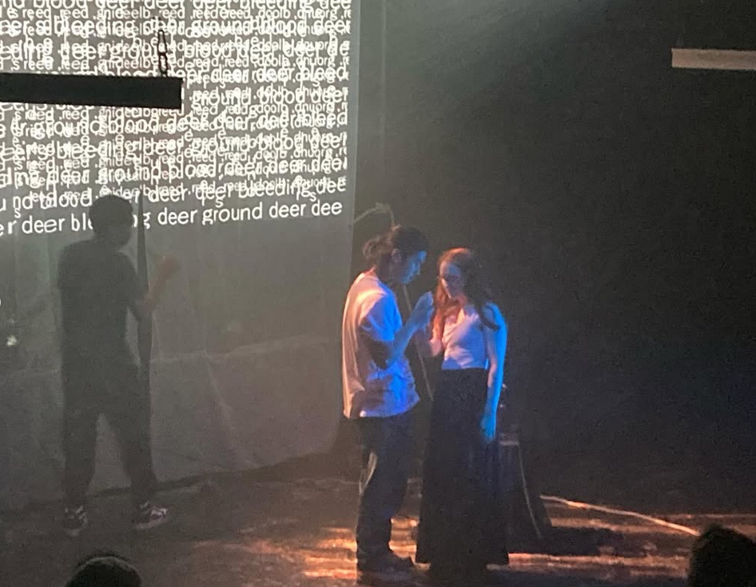
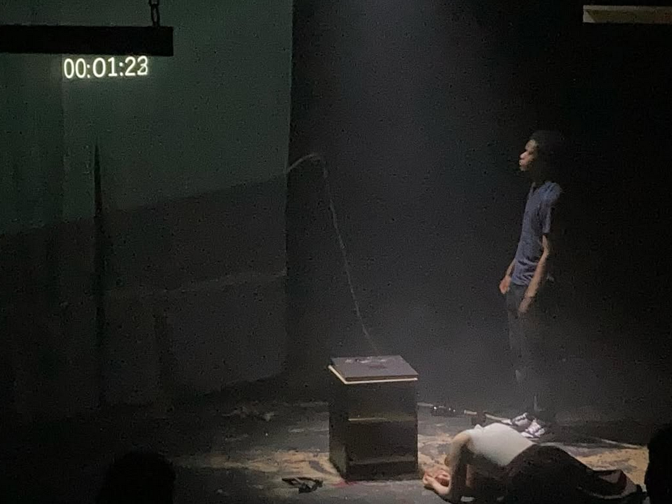
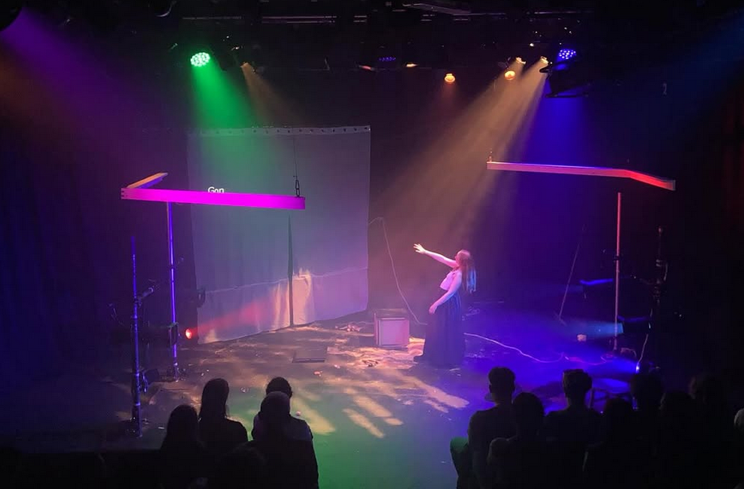

"Saudade Minus One Equals (S-1=)" (Sep 2025) | design | rigging | programming
Saudade Minus One Equals (S-1=) was an Independent Research Project in collaboration with the MA Directing course at Rose Bruford College. This grotesque, experimentalist piece of devised theatre, based on a short story, portrays the safety and sanctity of the protagonist's home against a barren, unforgiving wasteland outside.


In collaboration with the set designer I used the negative space created by the hung wooden pieces to contrast these violently different landscapes.

